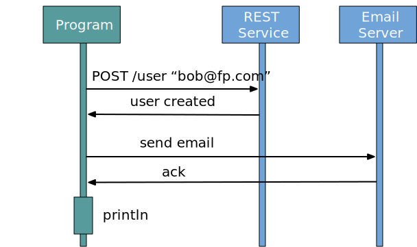
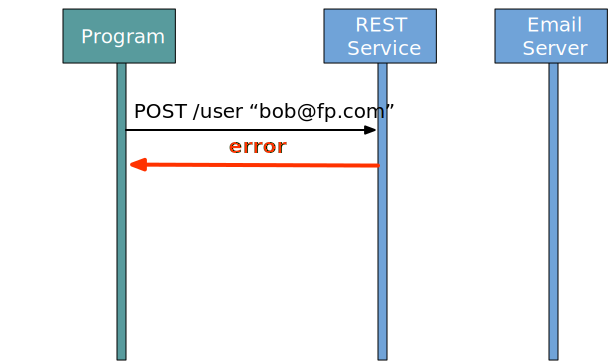
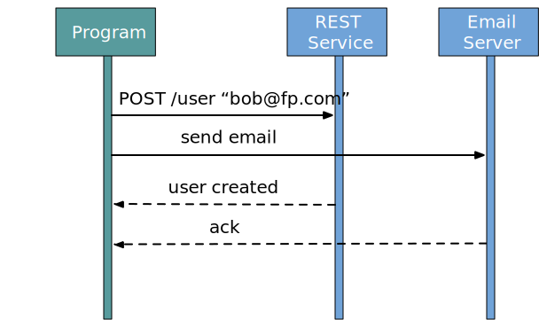
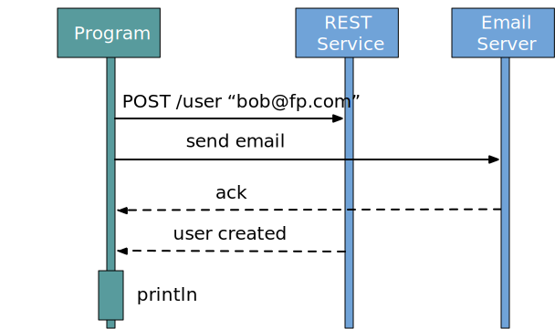
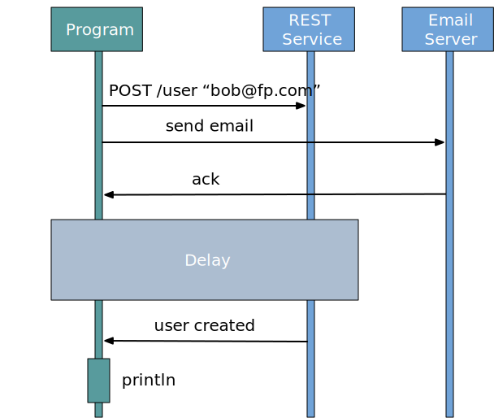
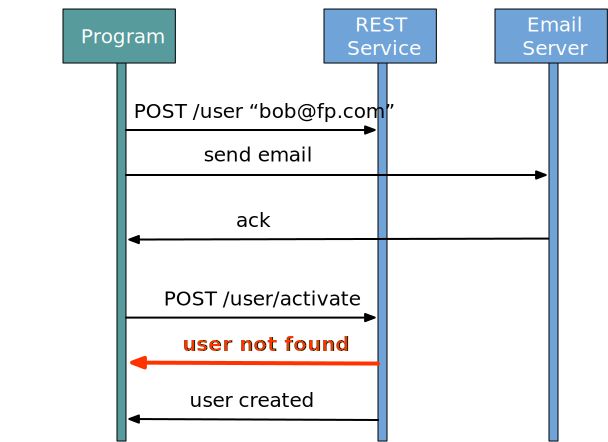
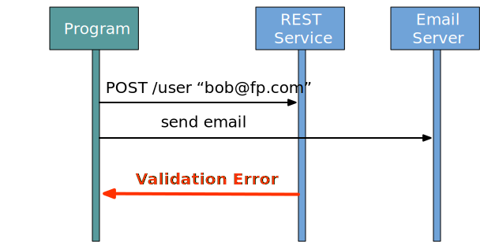

background-image: url(../img/fp-tower/website-background.svg) class: center, middle, white .title[Refactoring] --- <br><br><br><br><br><br> .eighty-seven-right[ # Which is more difficult? ## Updating an existing program ## 2. Creating one from scratch ] --- class: medium-code # Refactoring: reorder variables .forty-seven-left[ ```scala def helloV1(user: User) = { val res1 = funA(user) val res2 = funB(user) // ... } ``` ] --- class: medium-code # Refactoring: reorder variables .forty-seven-left[ ```scala def helloV1(user: User) = { `val res1 = funA(user)` val res2 = funB(user) // ... } ``` ### Is helloV1 equivalent to helloV2? ```scala def helloV2(user: User) = { val res2 = funB(user) `val res1 = funA(user)` // ... } ``` ] --- class: medium-code # Refactoring: reorder variables .forty-seven-left[ ```scala def helloV1(user: User) = { `val res1 = 10` val res2 = "" // ... } ``` ### Is helloV1 equivalent to helloV2? ```scala def helloV2(user: User) = { val res2 = "" `val res1 = 10` // ... } ``` ] .forty-seven-right[.center[ ### Yes, if they are all FP functions ]] --- class: medium-code # Refactoring: reorder variables .forty-seven-left[ ```scala def helloV1(user: User) = { `val res1 = db.delete(user.id)` val res2 = db.insert(user) // ... } ``` ### Is helloV1 equivalent to helloV2? ```scala def helloV2(user: User) = { val res2 = db.insert(user) `val res1 = db.delete(user.id)` // ... } ``` ] .forty-seven-right[.center[ ### Yes, if they are all FP functions <br> No, otherwise ]] .forty-seven-right[ ```scala helloV1(user) // user saved in db helloV2(user) // user deleted from db ``` ] --- class: medium-code # Refactoring: remove unused code .forty-seven-left[ ```scala def helloV1(user: User) = { funA(user) val res1 = funB(user) val res2 = funC(user) res1 } ``` ] --- class: medium-code # Refactoring: remove unused code .forty-seven-left[ ```scala def helloV1(user: User) = { `funA(user)` val res1 = funB(user) val res2 = funC(user) res1 } ``` ] --- class: medium-code # Refactoring: remove unused code .forty-seven-left[ ```scala def helloV1(user: User) = { funA(user) `val res1 = funB(user)` `val res2 = funC(user)` res1 } ``` ] --- class: medium-code # Refactoring: remove unused code .forty-seven-left[ ```scala def helloV1(user: User) = { funA(user) val res1 = funB(user) val res2 = funC(user) `res1` } ``` ] --- class: medium-code # Refactoring: remove unused code .forty-seven-left[ ```scala def helloV1(user: User) = { funA(user) val res1 = funB(user) val `res2` = funC(user) res1 } ``` ] --- class: medium-code # Refactoring: remove unused code .forty-seven-left[ ```scala def helloV1(user: User) = { `funA(user)` val res1 = funB(user) `val res2 = funC(user)` res1 } ``` ### Is helloV1 equivalent to helloV2? ```scala def helloV2(user: User) = funB(user) ``` ] -- .forty-seven-right[.center[ ### Yes, if funA and funC are FP functions ]] --- class: medium-code # Refactoring: remove unused code .forty-seven-left[ ```scala def helloV1(user: User) = { `funA(user)` val res1 = funB(user) `val res2 = funC(user)` res1 } ``` ### Is helloV1 equivalent to helloV2? ```scala def helloV2(user: User) = funB(user) ``` ] .forty-seven-right[.center[ ### Yes, if funA and funC are FP functions <br> No, otherwise ]] .forty-seven-right[ ```scala def funA(user: User): Unit = if(user.email.isDefined) throw InvalidUser("No email") def funC(user: User): Unit = sendEmail(user) ``` ] --- class: medium-code # Refactoring: de-duplicate .forty-seven-left[ ```scala def helloV1(user: User) = { val res1 = `funA(user)` // .. val res2 = `funA(user)` funB(res1, res2) } ``` ] --- class: medium-code # Refactoring: de-duplicate .forty-seven-left[ ```scala def helloV1(user: User) = { val res1 = funA(user) // .. val res2 = funA(user) funB(res1, `res2`) } ``` ### Is helloV1 equivalent to helloV2? ```scala def helloV2(user: User) = { val res1 = funA(user) // .. funB(res1, `res1`) } ``` ] -- .forty-seven-right[.center[ ### Yes, if they are all FP functions <br> No, otherwise ]] .forty-seven-right[ ```scala def funA(user: User): BlogPost = BlogPost( id = `UUID.randomUUID()`, author = user.name, content = "", createdAt = `Instant.now()`, ) ``` ] --- class: medium-code # Refactoring: de-duplicate .forty-seven-left[ ```scala def helloV1(user: User) = { val res1 = funA(user) // .. val res2 = funA(user) funB(res1, `res2`) } ``` ### Is helloV1 equivalent to helloV2? ```scala def helloV2(user: User) = { val res1 = funA(user) // .. funB(res1, `res1`) } ``` ] .forty-seven-right[.center[ ### Yes, if they are all FP functions <br> No, otherwise ]] .forty-seven-right[ ```scala def funA(user: User): Unit = charge(user.debitCard, 100) helloV1(user) // charge `$200` helloV2(user) // charge `$100` ``` ] --- class: medium-code # Refactoring: extract - inline .forty-seven-left[ ```scala def helloV1(user: User) = { funA(funB(user), funC(user)) } ``` ] --- class: medium-code # Refactoring: extract - inline .forty-seven-left[ ```scala def helloV1(user: User) = { funA(`funB(user)`, `funC(user)`) } ``` ] --- class: medium-code # Refactoring: extract - inline .forty-seven-left[ ```scala def helloV1(user: User) = { funA(`funB(user)`, `funC(user)`) } ``` ### Is helloV1 equivalent to helloV2? ```scala def helloV2(user: User) = { val res1 = `funB(user)` val res2 = `funC(user)` funA(res1, res2) } ``` ] -- .forty-seven-right[.center[ ### Yes, if they are all FP functions <br> No, otherwise ]] --- class: medium-code # Refactoring: extract - inline .fifty-two-left[ ```scala import scala.concurrent.Future def createUser(email: String): Future[User] = httpClient.post("/user", email) def sendActivationLink(email: String):Future[Unit] = emailClient.send(email, generateLink(email)) ``` ] -- .fifty-two-left[ ```scala def newUserWorkflow(email: String): Future[Unit] = for { user <- createUser(email) _ <- sendActivationLink(email) } println(s"User created: $user") ``` ] --- class: medium-code # Refactoring: extract - inline .fifty-two-left[ <br><br> ```scala def newUserWorkflow(email: String): Future[Unit] = for { user <- createUser(email) _ <- sendActivationLink(email) } println(s"User created: $user") ``` ] .forty-seven-right[.center[  ]] --- class: medium-code # Refactoring: extract - inline .fifty-two-left[ <br><br> ```scala def newUserWorkflow(email: String): Future[Unit] = for { user <- `createUser`(email) _ <- sendActivationLink(email) } println(s"User created: $user") ``` ] .forty-seven-right[.center[  ]] --- class: medium-code # Refactoring: extract - inline .fifty-two-left[ <br> ```scala def newUserWorkflow(email: String): Future[Unit] = { val futureUser = createUser(email) val futureEmail = sendActivationLink(email) for { user <- futureUser _ <- futureEmail } println(s"User created: $user") } ``` ] --- class: medium-code # Refactoring: extract - inline .fifty-two-left[ <br> ```scala def newUserWorkflow(email: String): Future[Unit] = { val futureUser = `createUser`(email) val futureEmail = `sendActivationLink`(email) for { user <- futureUser _ <- futureEmail } println(s"User created: $user") } ``` ] --- class: medium-code # Refactoring: extract - inline .fifty-two-left[ <br> ```scala def newUserWorkflow(email: String): Future[Unit] = { val futureUser = `createUser`(email) val futureEmail = `sendActivationLink`(email) for { user <- futureUser _ <- futureEmail } println(s"User created: $user") } ``` ] .forty-seven-right[.center[ ]] --- class: medium-code # Refactoring: extract - inline .fifty-two-left[ <br> ```scala def newUserWorkflow(email: String): Future[Unit] = { val futureUser = createUser(email) val futureEmail = sendActivationLink(email) for { user <- `futureUser` _ <- `futureEmail` } println(s"User created: $user") } ``` ] .forty-seven-right[.center[  ]] --- class: medium-code # Refactoring: extract - inline .fifty-two-left[ <br> ```scala def newUserWorkflow(email: String): Future[Unit] = { val futureUser = createUser(email) val futureEmail = sendActivationLink(email) for { user <- `futureUser` _ <- `futureEmail` } println(s"User created: $user") } ``` ] .forty-seven-right[.center[ ]] --- class: medium-code # Refactoring: extract - inline .fifty-two-left[ <br> ```scala def newUserWorkflow(email: String): Future[Unit] = { val futureUser = createUser(email) val futureEmail = sendActivationLink(email) for { user <- futureUser _ <- futureEmail } `println`(s"User created: $user") } ``` ] .forty-seven-right[.center[  ]] --- class: medium-code # Refactoring: extract - inline .fifty-two-left[ <br> ```scala def newUserWorkflow(email: String): Future[Unit] = { val futureUser = createUser(email) val futureEmail = sendActivationLink(email) for { user <- `futureUser` _ <- futureEmail } println(s"User created: $user") } ``` ] .forty-seven-right[.center[  ]] --- class: medium-code # Refactoring: extract - inline .fifty-two-left[ <br> ```scala def newUserWorkflow(email: String): Future[Unit] = { val futureUser = createUser(email) val futureEmail = sendActivationLink(email) for { user <- futureUser _ <- futureEmail } println(s"User created: $user") } ``` ] .forty-seven-right[.center[  ]] --- class: medium-code # Refactoring: extract - inline .fifty-two-left[ <br> ```scala def newUserWorkflow(email: String): Future[Unit] = { val futureUser = createUser(email) val futureEmail = sendActivationLink(email) for { user <- futureUser _ <- futureEmail } println(s"User created: $user") } ``` ] .forty-seven-right[.center[  ]] --- class: middle background-image: url(../img/fp-tower/website-background.svg) <br><br> ## .white[Confident refactoring] ## .white[Faster development of new features] ## .white[Less random bugs when releasing] <br><br>